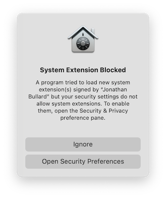
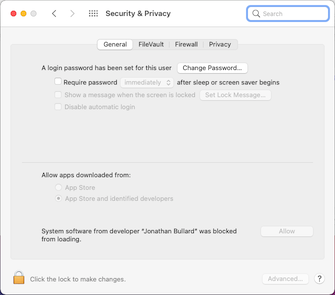

|
Highlighted Articles
News
Installing Tunnelblick
Uninstalling Tunnelblick
Setting up Configurations
Using Tunnelblick
Getting VPN Service
Common Problems
Configuring OpenVPN
Release Notes
Thanks
FAQ
Discussion Group
Read Before You Post
|
Installing System Extensions
Important: See The Future of Tun and Tap VPNs on macOS for information about changes to future versions of macOS.
Also see Tunnelblick on macOS Big Sur, and, if you are using an Apple Silicon (M1) Mac, Tunnelblick and Apple Silicon.
IMPORTANT: You only need to install Tunnelblick's system extensions if you are
- Running on macOS Big Sur; and
- Using to a "Tap" VPN.
The process of installing Tunnelblick's system extensions on recent versions of macOS requires one or more restarts of your computer.
The following describes the process when using Tunnelblick 3.8.5 beta03 (build 5630) and higher:
Installing Kexts on an M1 Mac Running macOS Big Sur 11.1
On an Apple Silicon (M1) Mac, the process of installing Tunnelblick's system extensions requires three restarts of your computer.
- Use the button on Tunnelblick's "Utilities" panel to install Tunnelblick's Tun and Tap system extensions.
- After authorizing Tunnelblick to install the kexts, you will be prompted by macOS to open the Security & Privacy preference pane to allow the kexts to be loaded:

- After opening the Security & Privacy preference pane, click the "Enable system extensions…" button:
- You'll see the following instructions:
- Shut down your computer, then start it up by pressing the power button and holding it down until your system starts in [macOS Recovery](https://support.apple.com/guide/mac-help/macos-recovery-a-mac-apple-silicon-mchl82829c17/mac) and you see the startup options page.
- Select "Options".
- Select Utilities > Startup Security Utility.
- Select the system you want to use to set the security policy.
- If the disk is encrypted with FileVault, click Unlock, enter the password, then click Unlock.
- Click Security Policy.
- Click to select the “Allow user management of kernel extensions from identified developers” checkbox.
- Click OK.
- Restart your Mac for the changes to take effect.
- Go to the Security & Privacy preference pane; click on the "Allow" button:

- After authorizing the software, you will be prompted to restart your computer to be able to use the new system extensions:
- Restart your computer. You should now be able to use Tun and Tap configurations.
Installing Kexts on an Intel Mac running macOS Big Sur
On an Intel Mac, the process of installing Tunnelblick's system extensions requires one restart of your computer.
- Use the button on Tunnelblick's "Utilities" panel to install Tunnelblick's Tun and Tap system extensions.
- After authorizing Tunnelblick to install the kexts, you will be prompted by macOS to open the Security & Privacy preference pane to allow the kexts to be loaded:
- After opening the Security & Privacy preference pane, click the "Allow" button:
- After authorizing the software, you will be prompted to restart your computer to be able to use the new system extensions:
- Restart your computer. You should now be able to use Tun and Tap configurations.
|